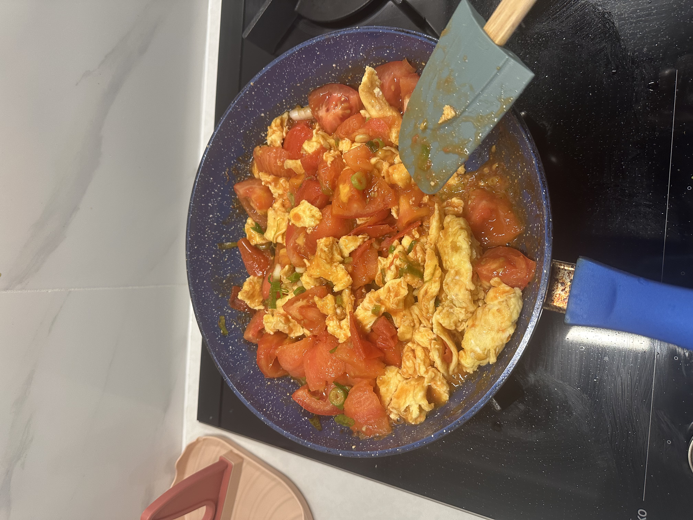

Home
Tomato Egg Stir Fry

Picture of Chinese Tomato Egg Stir Fry
Ingredients
- 3 eggs
- 2 medium tomatoes
- 1-2 tbsp oil
- 1-2 tsp sugar
- 1/2 tsp salt
- Half of a chopped spring onion
Instructions
- Beat eggs with a pinch of salt.
- Cut tomatoes into wedges.
- Heat oil in a pan over medium heat.
- Pour in eggs and gently scramble until just set and fluffy.
- Remove eggs and set aside.
- Add tomatoes and stir-fry until they soften and release juice (2–3 min).
- Add sugar and salt
- Return eggs to the pan.
- Gently mix everything together until coated in the tomato sauce.
- Taste and adjust seasoning.
- Garnish with spring onions if you like.